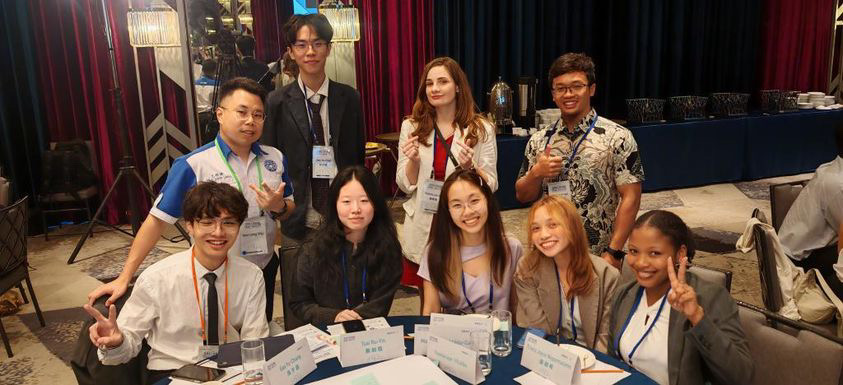
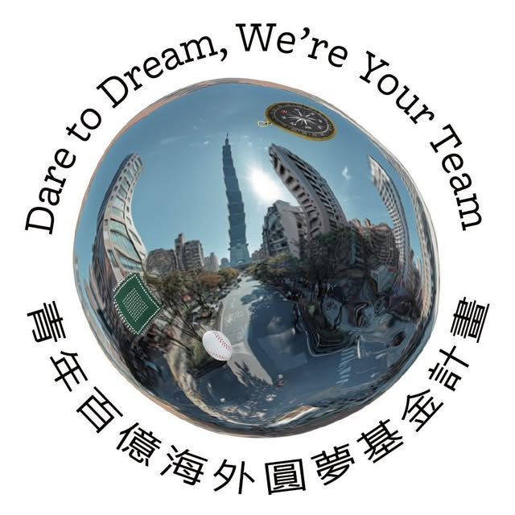
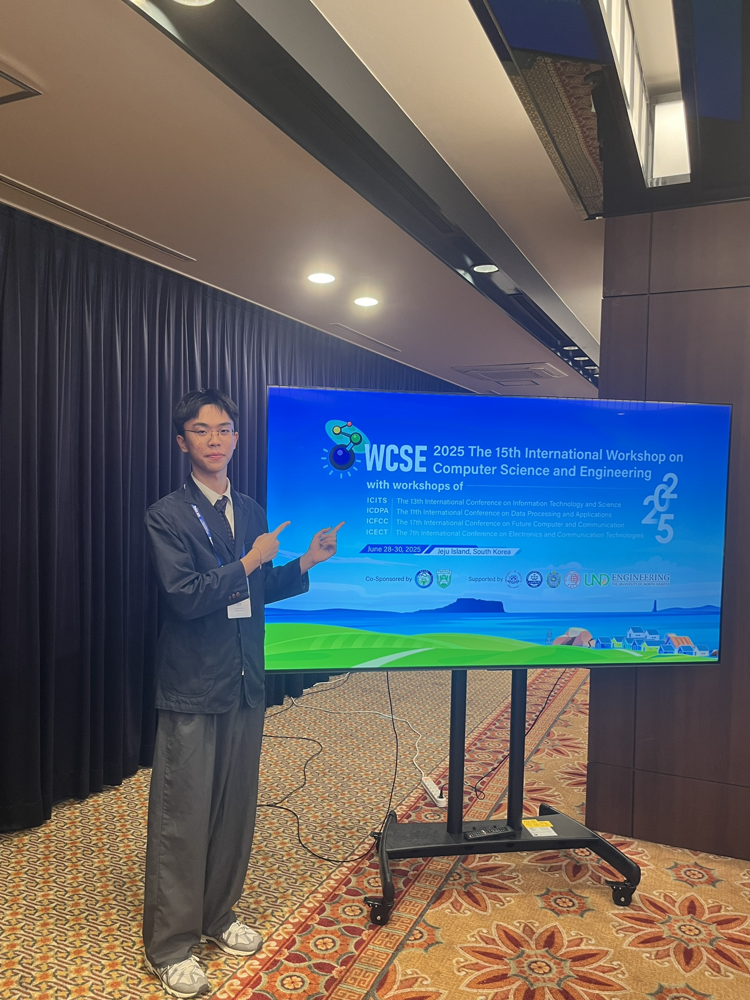
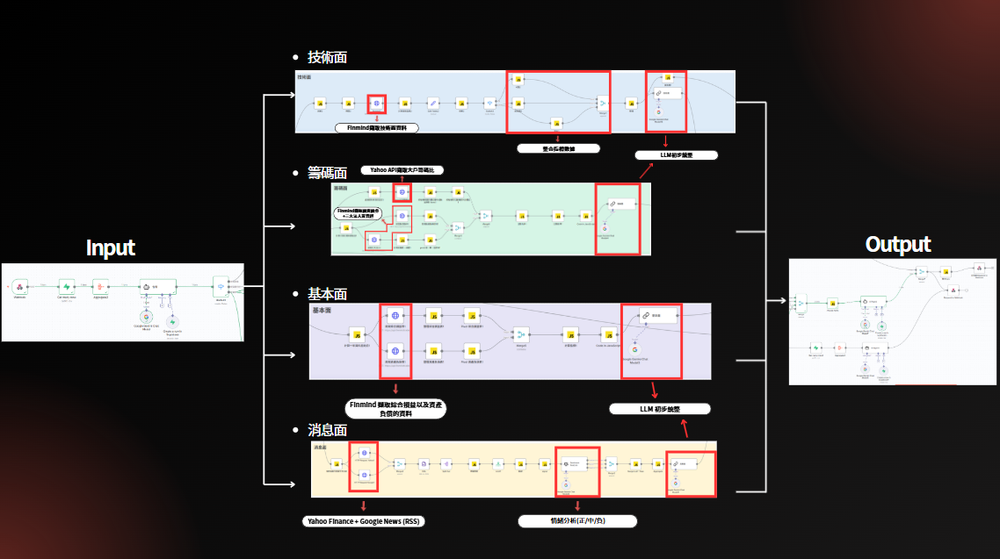
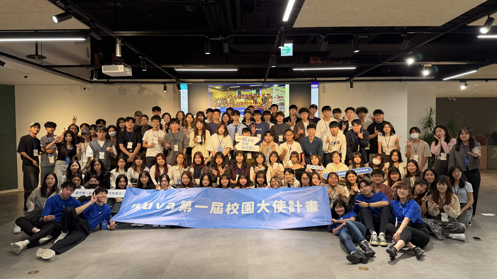
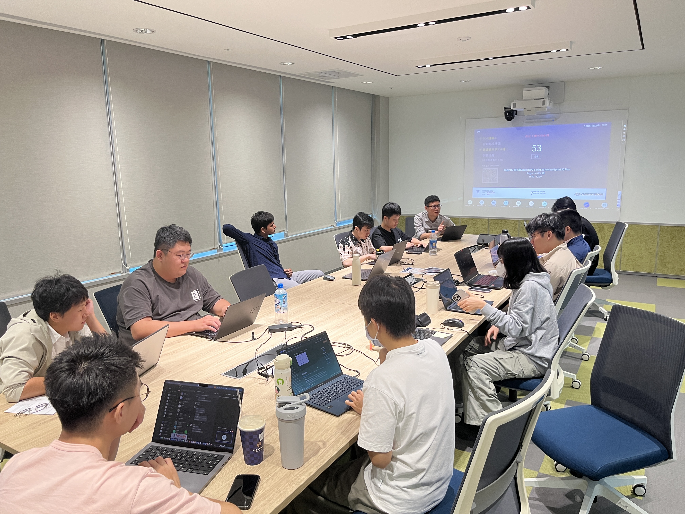
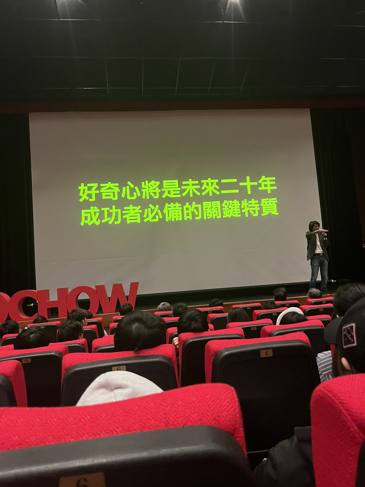

跨文化交流
2024青年國際交流論壇
國際交流與公共表達

陳宇宸前言 |
I-9-2 韓流科技巨擘實踐計畫
Let’s get started Email: anguschen10830@gmail.com跨文化交流

把問題定義成指標

把模型串成可互動產品

把 AI 轉譯給更多青年

看見企業 AI 落地

理解 AI 如何從模型能力，真正進入企業流程、產品服務與使用者場景，並探索自己在 AI 應用與產品端的方向
希望在跨文化場域中，觀察不同國家如何討論 AI 產品、平台生態與市場需求，並練習用不同語言進行專業溝通
我希望我未來往 AI PM方向發展，因此我想補足自己從技術實作走向產品思維的視角
整理韓國平台生態、AI 應用、新創投資與市場案例，轉化成個人筆記與主題式心得
透過 IG、Threads、短影音或校園分享，把抽象的科技觀察轉成同儕更容易吸收的內容
把產品思維、平台視角與市場理解，累積成未來投入 AI 應用與產品端的能力
真正有意義的國際見習，不只是帶回一段經歷，而是帶回能持續實踐的思考方式與行動方向
Closing
對我來說，好奇心是理解、整理、轉化，最後變成可以被更多人使用的行動
